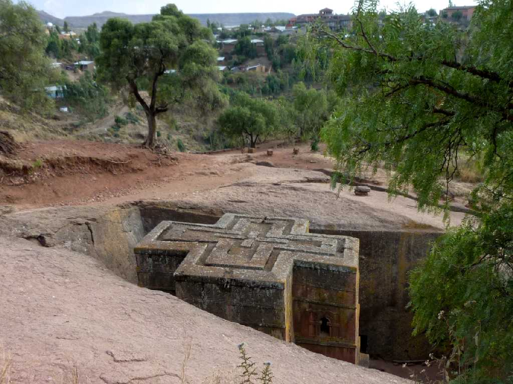
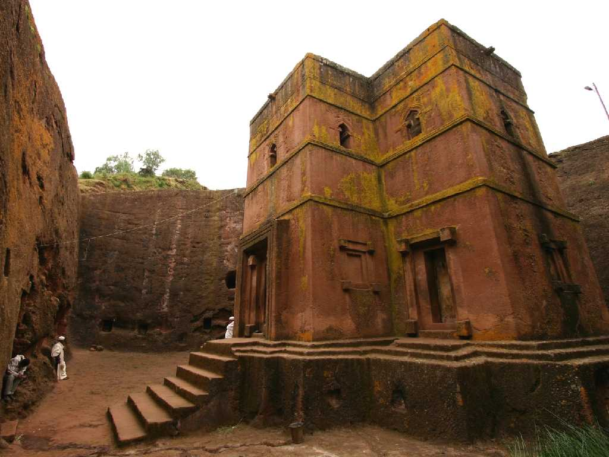

Bet Giorgis Lalibela
エチオピアの顔聖ギオルギス教会 第一教会群第二協会群の後１３世紀初頭に岩を彫り抜いて創建された高さ縦横１２ｍの最も完成度が高く美しい建造物である

ラリベラは蜂に選ばれた者を意味しラリベラ王が生まれたとき蜂が群がったことから名づけられこの旧名ロハの街はラリベラとなった ラリベラ王は１１８７年エルサレムがムスリムに占領されたときにザグウェ朝の首都ロハを新たなエルサレムにしようとして街造りを行った